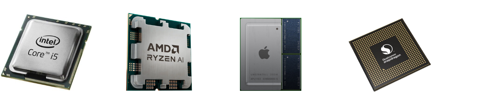
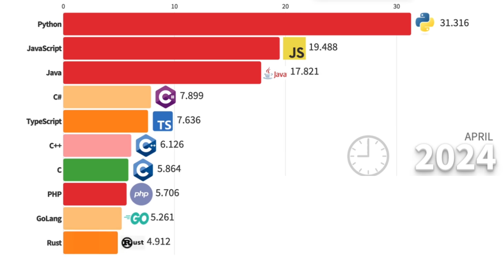
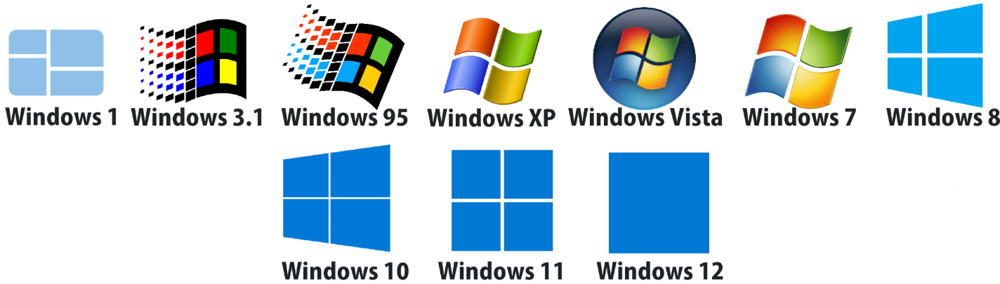
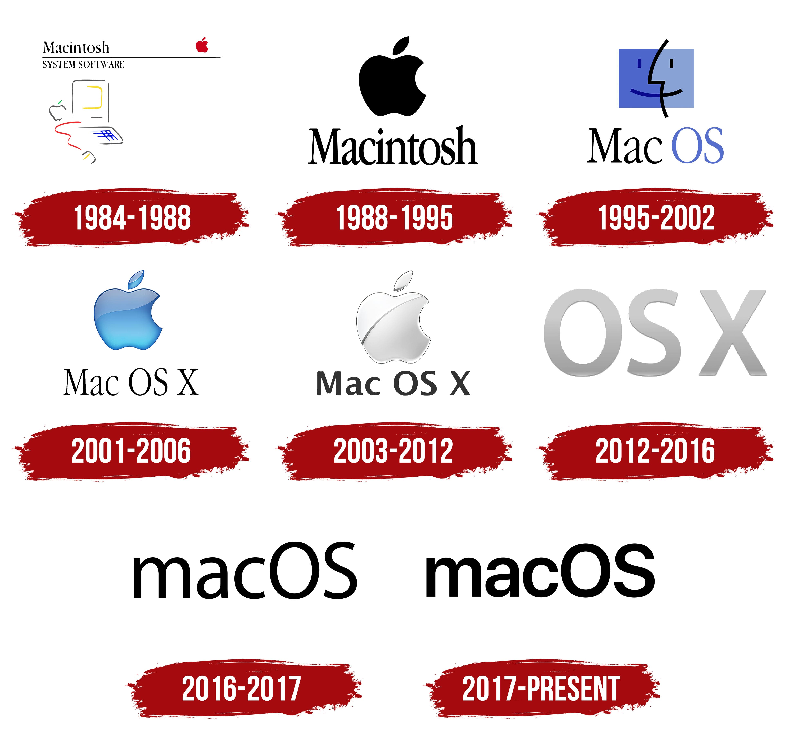
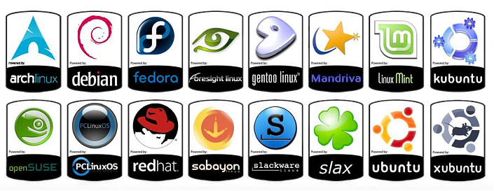
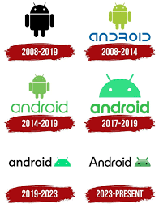
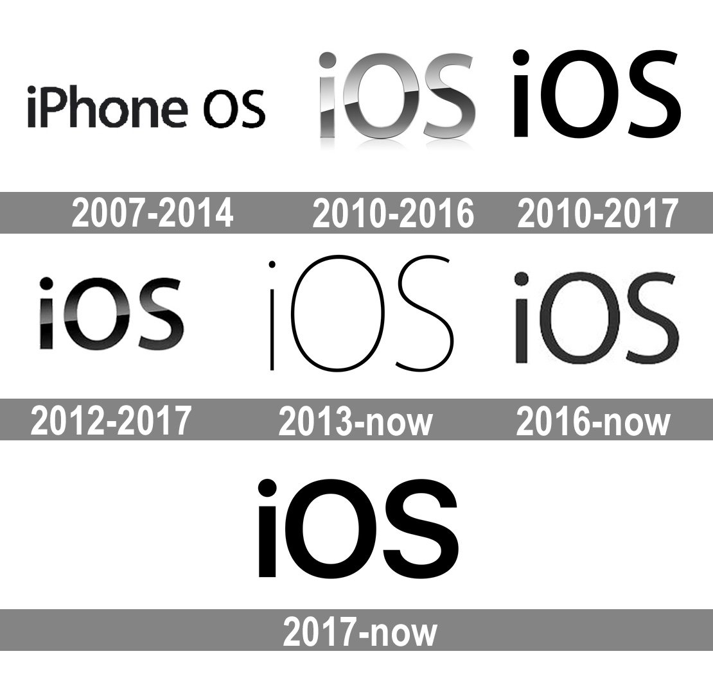

Software#
Introduction to computer programming
Management and Artificial Intelligence
How can a computer execute a program?#

The CPU is responsible for executing the program code:
It interprets the instructions one by one from the RAM
The instructions must be written in machine code
The machine code is:
Low level: relatively simple operations
CPU specific: different CPUs have different machine codes
Binary format: humans struggle to read it
Machine code: Intel/AMD vs ARM#
A simple sequence of instructions to compute the sum of two integer numbers would look like this in machine code:
| Intel/AMD 64 bit machine code | ARM 64-bit machine code | ||
|
|
Each instruction is shown on a separate line for clarity, but stored contiguously in memory
Machine code is binary (shown here in hexadecimal for readability)
Intel/AMD processors share the same machine code format
Other processors like ARM use entirely different machine code formats
From machine code to assembly code#
To make machine code understandable for humans, we can translate it to assembly code:
Low level [same as machine code]: relatively simple operations
CPU specific [same as machine code]: different CPUs have different assembly codes
Human readable [differently from machine code]: CPU struggles to read it!
| Intel/AMD 64-bit assembly | ARM 64-bit assembly | ||
|
|
Without getting into details, we can see that this code is doing some basic operations, such as addition, multiplication, copy/move of values from/to registers (which are different from CPU to CPU), etc.
NOTE:
Translation from/to machine code to/from assembly code is a one-to-one non-ambiguous mapping.
Translating from machine code to assembly code is called disassembly
While the opposite is called assembly
Writing low level code is impractical#
Major problems when working with machine/assembly code are:
Programmers have to write a lot of code to perform simple operations
Code is not portable across different hardware platforms
Programmers have to deal with hardware details
Programming in machine/assembly code is hard and error-prone
Yet, CPUs only understand and run machine code.
How can programmers survive?
From low-level to high-level programming#
Most programmers use high-level languages, such as Python, Javascript, or PHP, to write software.
However, the CPU does not understand high-level languages. Never!
Code written in high-level languages must be translated into machine code. Two main strategies:
Compilation:
Compilers translate high-level code into machine code at compile time
Compile time is when the developer compiles the code (before it is run).
Machine code is packaged into an executable.
One executable for each platform (Operating Systems and CPUs).
Developers keep the high-level code, while users get the low-level code.
Interpretation:
Interpreters translate high-level code into machine code at running time.
Running time means when the user runs the code.
The code is portable and platform independent.
Developers distribute the high-level code, users use the interpreter to run the code.
Compiled code is typically more efficient than interpreted code.
Compilation#

Interpretation#

Why do we need to learn a programming language?#
Most everyday tasks require to perform:
repetitive…
long sequences of…
simple steps
This scenario is exactly where a computer excels!
Computers are incredibly fast, accurate, and stupid. Human beings are incredibly slow, inaccurate, and brilliant. Together they are powerful beyond imagination.
– Albert Einstein
Language: syntax and semantics#
Programming languages have:
Syntax: it defines which strings of characters and symbols are well formed.
Semantics: it defines the meaning of the well-formed strings.
The same is true even for natural languages (English, Italian, etc.):
Syntax:
“I are big” is syntactically incorrect (“I am big” is correct).
“The square circle is big” is a well-formed sentence.
Semantics:
“The square circle is big” is semantically incorrect (nonsensical because “square” and “circle” contradict).
An important difference between programming languages and natural languages is that programming languages are designed to be unambiguous, which means that there is no room for interpretation.
Programming language paradigms#
Two major computing paradigms:
Imperative programming:
we describe how the program must accomplish the task
language statements describe the steps (how to do), just like a recipe
close to the paradigm adopted by machine code
Declarative programming:
we describe what to do (define the end goal), without saying how (no step-by-step)
language statements describe facts (what to do)
paradigm adopted, e.g., by Database programming languages (SQL)
distant from the paradigm adopted by machine code
Imperative programming is what we will see in this course.
NOTE: In many cases, code will be a mixture of both designs too, so it’s not always black-and-white.
Solving a task → Algorithm → Recipe#
An algorithm features:
a sequence of simple steps
flow of control to specify when each step must be executed
a way of determining when to stop.
…just like a recipe!
Even a plain 1 + 2 + 3 + 4 + 5 =? is an algorithm!
A slightly more complex example: Newton’s method#
The square root of \(x\) is a number \(y\) such that \(y \cdot y = x\) ← declarative!
Let’s see an imperative version:
Start with a guess \(g\)
If \(g \cdot g\) is “close enough” to \(x\):
Let \(y = g\)
Stop
Otherwise: a. Let \(g \leftarrow \tfrac{1}{2}\left( g + \tfrac{x}{g}\right)\) b. Repeat from step #2
Square root of 16 via Newton’s method:
\(g\) |
\(g \cdot g\) |
\(\tfrac{1}{2}\left( g + \tfrac{x}{g}\right)\) |
|---|---|---|
3 |
\(3 \cdot 3 = 9\) |
\(\tfrac{1}{2}\left( 3 + \tfrac{16}{3}\right) \simeq 4.17\) |
4.17 |
\(4.17 \cdot 4.17 \simeq 17.39\) |
\(\tfrac{1}{2}\left( 4.17 + \tfrac{16}{4.17}\right) \simeq 4.0035\) |
4.0035 |
\(4.0035 \cdot 4.0035 \simeq 16.028\) |
\(\tfrac{1}{2}\left( 4.0035 + \tfrac{16}{4.0035}\right) \simeq 4\) |
NOTE: As already pointed out, we cannot write an algorithm in our own natural language (e.g., English). To make an algorithm interpretable by a computer, we need to learn a programming language.
MANY different high-level languages#

There are thousands of high-level languages:
They have been designed with different goals in mind
Some are general purpose, some are domain specific (e.g., web)
Some gives more control to the user, some hide more details
Some are compiled, some are interpreted
In this course, we will focus on a single high-level language: but which should we choose?
Popular programming languages#

See the full video
Python#
{kind=link}
Benefits:
Easy to learn: designed to be readable, quick to learn
High-level language: abstracting away most low-level aspects of a computer
Large community and great support: several libraries allow to build complex projects with just a few lines of code
Adequate for most tasks: it shows its limits when performance is essential and low-level details play a role. You will hardly work on anything that cannot be implemented in Python
Python:
is an imperative programming language
with minor flavors of declarative (functional) programming traits.
Computers run complex software stacks#
Python is nice and powerful, but computers are expected to run MANY programs at the same time:
Browser to visit web pages (e.g., Chrome)
Office editor to write documents
File manager to organize files
Messaging applications (e.g., Telegram)
Video streaming client (e.g., Netflix)
…and way more!
Some of these may be written in Python, but others are written in other languages.
Hence, a computer cannot just run a single Python program. Moreover, computers are expected to:
embrace the concept of user accounts
provide access only after user authentication
protect files across users and prevent hardware damage
allow only admin users to install other programs
handle network connections, power management
This is a LOT of HARD work: we need an Operating System (OS).
Operating Systems#
Modern computing systems are based on operating systems, which are software designed to allow the execution of applications (programs) on the available hardware.
The main tasks of an operating system are:
Process management (creation, termination, CPU scheduling, etc.): any application (program) running on your OS is associated with a process.
Resource allocation to processes (RAM, storage, network connections)
Time management (clock, timers)
User management for multi-user systems (access privileges to files, programs)
Inter-process communication (locally or across networked systems)
Error handling during process execution or system operations
Protection and security, isolating processes to prevent interference with other processes, the OS, or hardware (preventing data theft or malicious/buggy operations)
Design goals of modern Operating Systems#
Modern operating systems are designed with several key objectives:
Multitasking: Ability to run multiple applications simultaneously
Preemption: Capability to take CPU control from one process and give it to another
Progress & fairness: Regular CPU allocation to all processes to ensure computational progress
High throughput: Maximizing the number of instructions executed per time unit
Low latency: Minimizing response time for system operations (critical in real-time environments like automotive safety systems)
Overview Operating System#

The hardware is the physical part of the computer, containing CPU, RAM, disks and other devices.
To program the hardware, each architecture defines the Instruction Set Architecture (ISA), which defines machine code instruction syntax and semantics.
The platform (operating system on a specific architecture, e.g., Windows x86) defines the Application Binary Interface (ABI), which defines conventions (rules) on how different programs can interact, reuse code, and interface with the operating system.
Overview Operating System (cont’d)#
The operating system:
has full control over the hardware:
it runs in supervisor (kernel) execution mode
it can execute ALL instructions from the ISA.
controls which applications should run on the CPU cores at any time
plays the role of intermediary between applications and the hardware
manages four key aspects: processes, memory management, file and I/O, time
Overview Operating System (cont’d)#
In user execution mode:
Code can run only a limited (safe) subset of the ISA
Privileged instructions must be delegated to the OS following the ABI
Processes can be related to:
built-in applications provided by the OS: e.g., file manager
applications installed by the users: e.g., Chrome (web browser by Google)
Applications use system libraries (subprograms for standard tasks, e.g., reading a file, make a network connection) to avoid reinventing the wheel when not necessary.
CPU Cores and Operating System Multitasking#
CPUs traditionally had only a single core (and many still have few cores)
Yet we can run many applications simultaneously
How is this possible?
The Operating System creates the illusion of parallel execution:
CPU time is divided into small time slots (milliseconds)
Each application gets a turn to use the CPU
When a time slot expires, the OS performs context switching
Applications take turns using the CPU so quickly that users perceive them running simultaneously
This technique is called time-sharing or preemptive multitasking and it is the essential trait of all modern operating systems.
NOTE: If you have:
\(1\) core without preemptive multitasking: up to \(1\) applications executing in parallel
\(1\) core with preemptive multitasking: illusion of parallel execution of an infinite number of apps
\(k\) cores without preemptive multitasking: up to \(k\) applications executing in parallel
\(k\) cores with preemptive multitasking: illusion of parallel execution of an infinite number of applications, with up to \(k\) actually executing in parallel at any given time
Popular Operating Systems#
Windows#
Proprietary, closed-source OS developed by Microsoft for:
Intel/AMD CPUs
ARM (still early stage)
Most widely used desktop OS globally
Known for user-friendly interface and software compatibility

macOS#
Proprietary, closed-source OS developed by Apple for:
PowerPC CPUs (before 2006)
Intel CPUs (before 2021)
Apple Silicon CPUs (now)
Known for sleek design and stability
Popular among creative professionals

GNU/Linux#
Combination of the Linux kernel and GNU userspace libraries
Packaged by different distributions (Ubuntu, Fedora, Debian, Gentoo, Arch)
Open Source: you can see and change its code!
Powers most web servers and supercomputers (even Microsoft uses it in their cloud!)

Android#
Linux-based OS developed by Google
Most popular mobile OS worldwide
Open ecosystem with extensive app marketplace

iOS#
Proprietary, closed-source OS for Apple mobile devices
Second most popular mobile OS worldwide
Closed ecosystem with extensive app marketplace

Learn the OS Essentials#
In the next lecture, we will learn about and work with essential operating system concepts.